sicko is a speculative design project developed for the Final Synthesis Laboratory C1 of Politecnico di Milano (yr. 2021 - 2022).
Francesco Ermanno Guida
Pietro Buffa di Castelalto
Alessandro Masserdotti
Giacomo Scandolara
Marcello Jacopo Biffi
Michele Invernizzi
Adele Mazzanti
Claudia Tranti
Bianca Forte
Andrea Laura Sanguineti
Laura Spanu
Alessia Toffanin
Riccardo Ventura
thought 'twas' all legit?
never say never just yet tho
